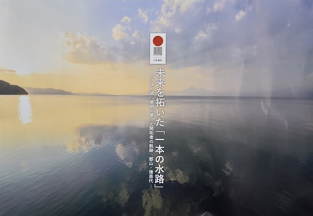

一本の水路ブランド
日本遺産「未来を拓いた『一本の水路』-
大久保利通"最期の夢"と開拓者の軌跡 郡山・猪苗代-」では、
「一本の水路」のイメージについて、多くの人たちに理解して
もらえるように、関連付けられる優れた産品や活動をしている団体など、
開拓者精神を次世代へ受け継ぐ象徴として「ブランド認証」をしています。
STORY
明治維新後、武士の救済と、新産業による近代化を進めるため、
安積地方の開拓に並々ならぬ思いを抱いていた大久保利通。
夢半ばで倒れた彼の思いは、
郡山から西の天空にある猪苗代湖より水を引く
「安積開拓・安積疏水開拓事業」で実現した。
奥羽山脈を突き抜ける「一本の水路」は、外国の最新技術の導入、
そして、この地域と全国から人、モノ、技を結集し、苦難を乗り越え完成した。
この事業は、猪苗代湖の水を治め、米や鯉など食文化を一層豊かにし、
さらには水力発電による紡績等の新たな産業の発展をもたらした。
未来を拓いた「一本の水路」は、
多様性と調和し共生する風土と、開拓者の未来を想う心、
その想いが込められた桜とともに、今なおこの地に受け継がれている。